Restorations
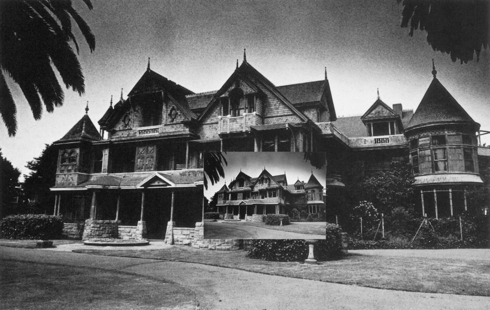Restorations for the
Winchester Mystery House
San Jose, CA
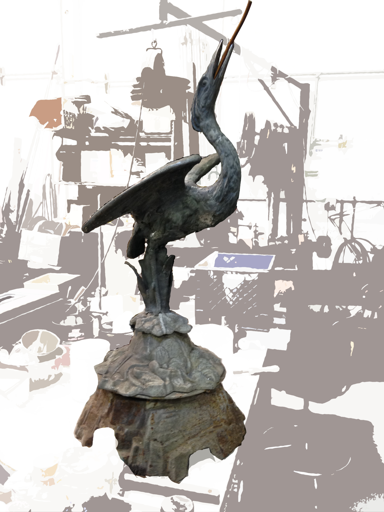Zinc Egret Fountain
Restoration
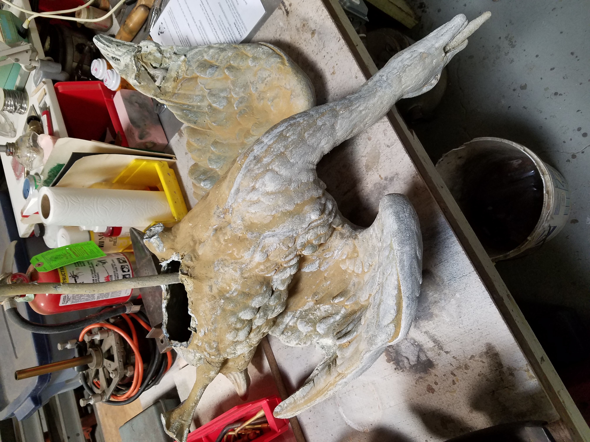


 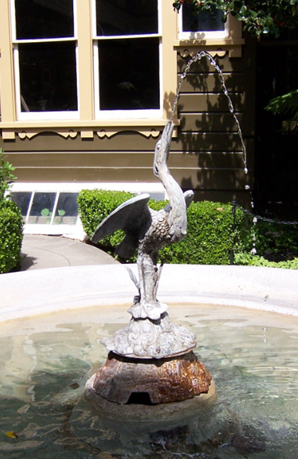
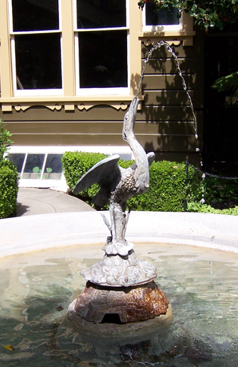
Egret in situ
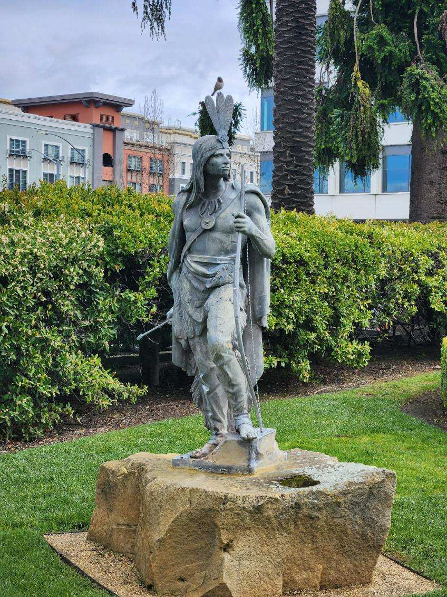Indian Chief #53
J. L. Mott Iron Works Company, NY, NY
150-year-old Zinc Sculpture
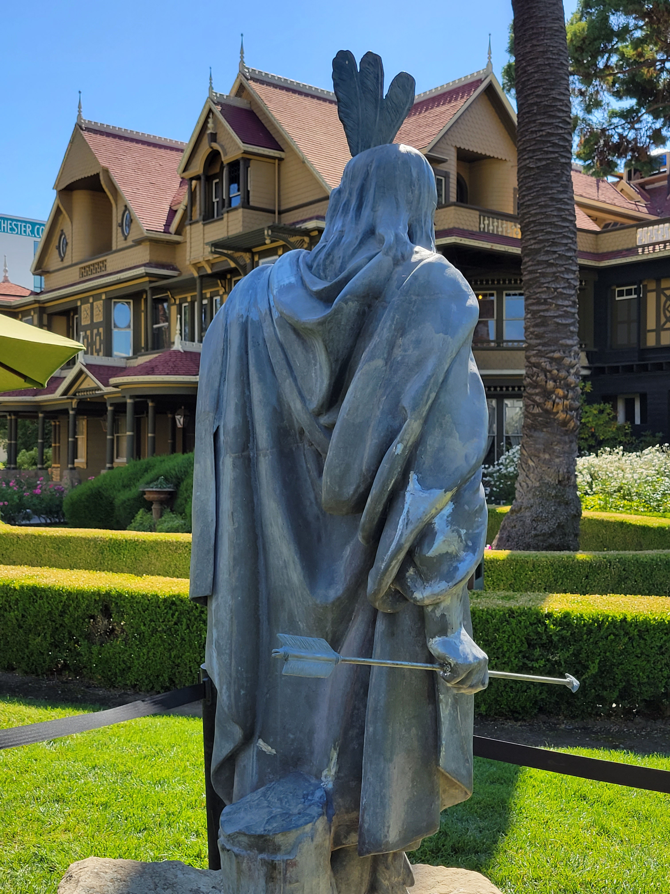
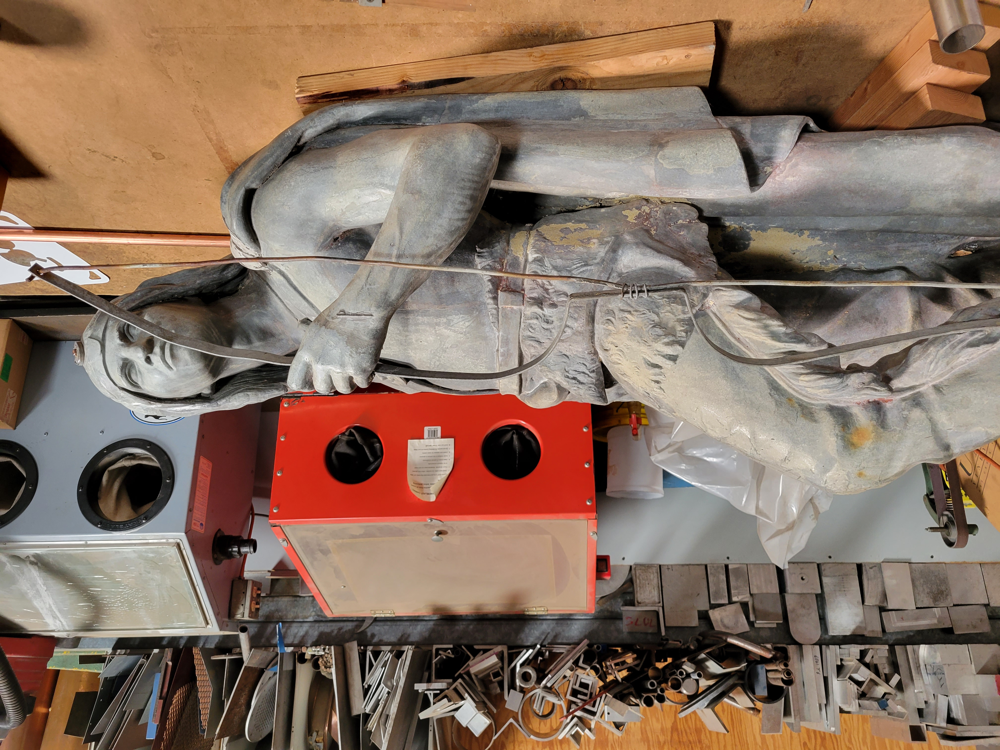
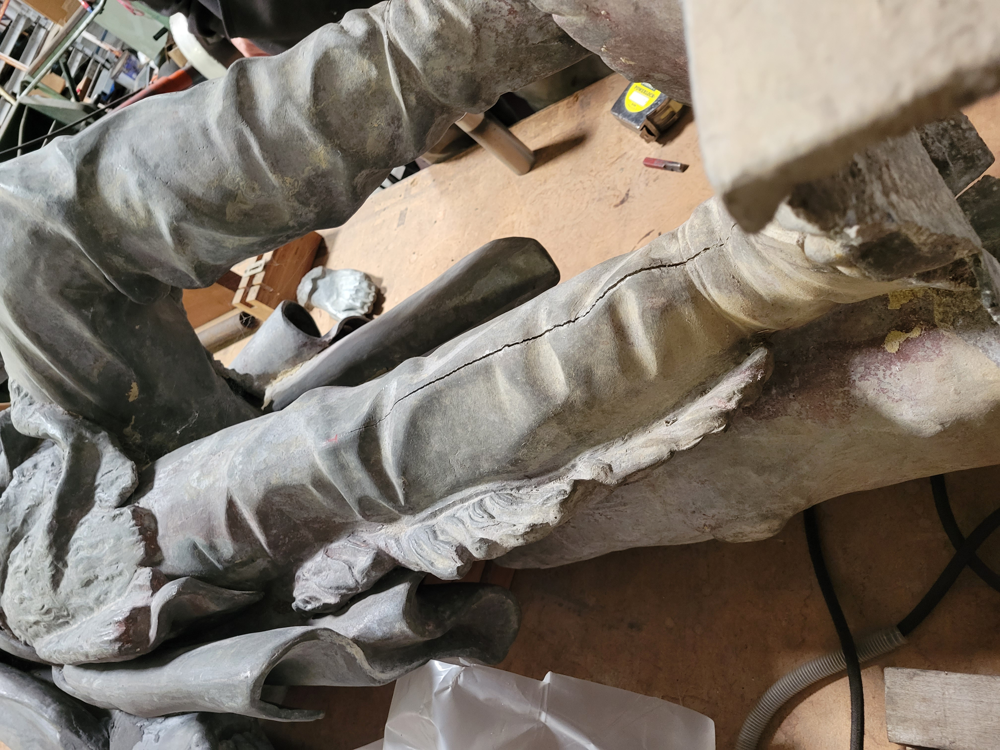
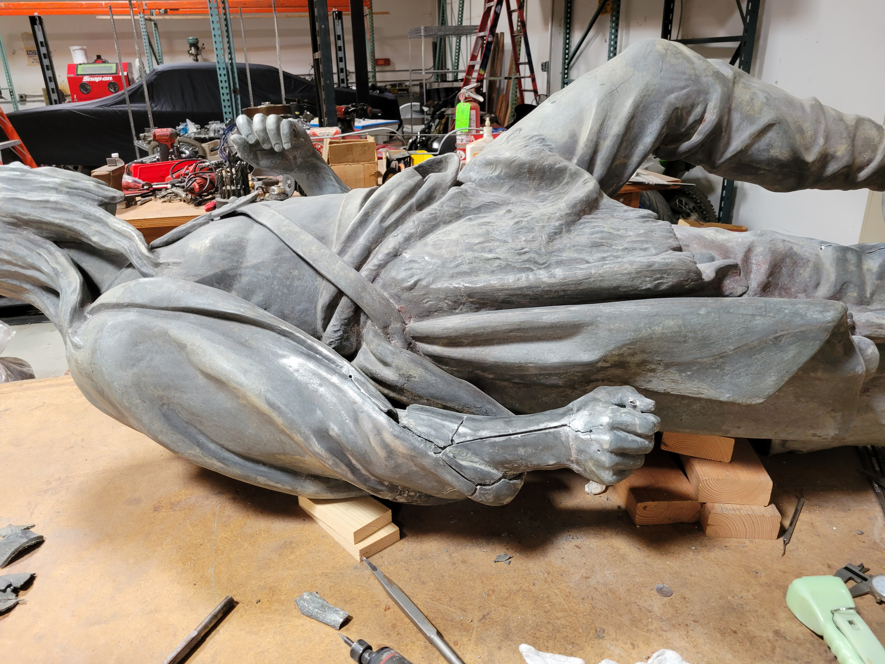
 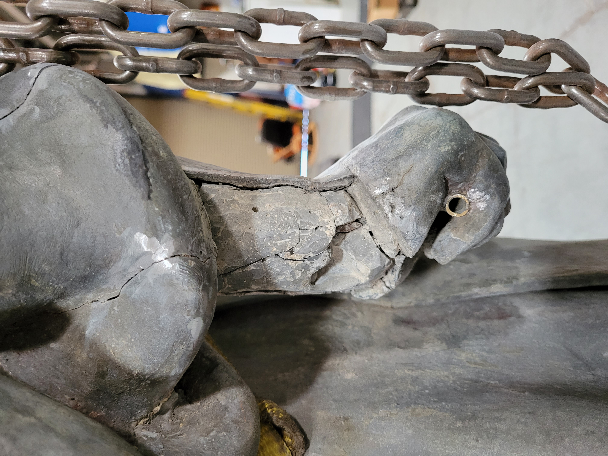
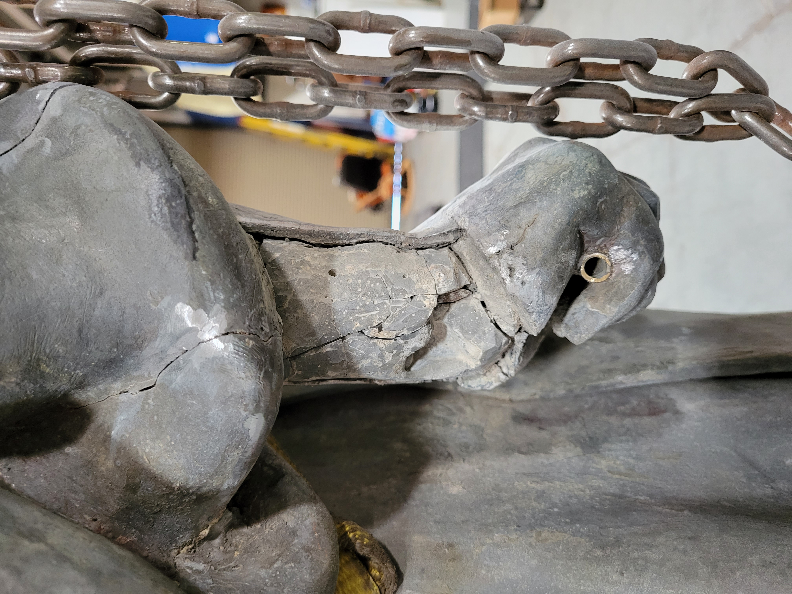